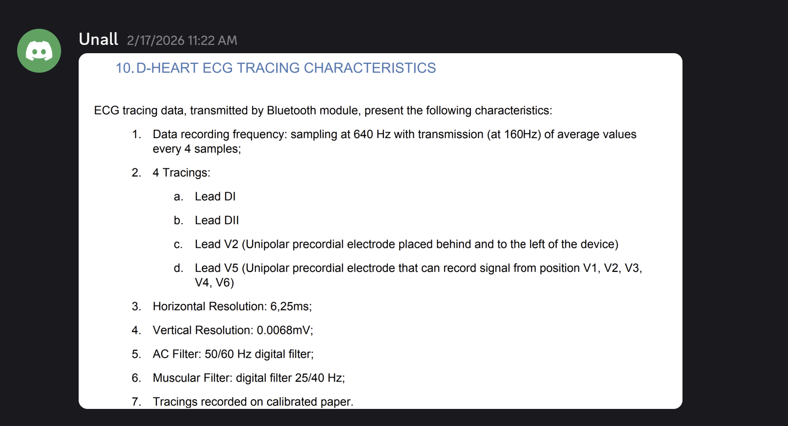

Week 1: Project Setup & Meetings
Overview
On the first day of the week, I attended a presentation about the general outline of the project we will be undertaking and information about the team (Team C, client, project scope, timeline). The next day, I met with the team, CEO, CTO, and other members. Later that day, it was determined which team I would be working on and with whom. Within the team, I took on the roles of Data Scientist and Data Analyst; in the following weeks, I also took on the roles of Scrum Master and Product Owner. I hope to better learn the Scrum methodology by applying my theoretical knowledge in practice.
Device Setup and Findings
During the week, the ECG device required to carry out the project was procured. After receiving the device, I tested it on myself to examine how it worked and how it recorded data. I also read the device’s user manual and verbally shared the information that we could only retrieve data from the device in PDF and SCP formats with my other team members during a meeting. Subsequently, my team members in the Capteur team obtained the technical documentation for the device by contacting the CTO.
User Manual Link: D-Heart User Manual
During the process of extracting data from the device, my colleague, who is a Data Scientist, discovered that we could connect to the device via Bluetooth using the bleak Python library. At this point, I thoroughly reviewed the technical documentation (D-HEART Bluetooth LE Protocol Description) and analyzed the format in which the data was transmitted via BLE (Bluetooth Low Energy).

Based on the technical data at hand and the basic connection structure created by my colleague, I prepared a comprehensive script with LLM support. By running this script, I successfully transferred the raw data to the Python environment; this work allowed us to exceed the 60-second recording limit specified in the user guide, significantly increasing our data depth for future analyses. Although this task was not directly part of my job description, I chose to engage in this technical process to better understand the analysis process and save time.
Research & Collaboration
ECG Signal Processing
I also researched how ECG signals are obtained and the signal processing stages. During my research, I found a PDF copy of the book titled “ECG Signal Processing, Classification and Interpretation” published by Springer and started reading it. You can access the notes I took during my reading and later shared with my team members here: Typst Project In addition to all this, I reviewed the device’s user manual and shared its features for recording ECG signals with my team members via the Discord channel we use for communication.

Client Presentation & Clinical Insights
My colleague Loïc and I worked on the section about us for the presentation to the client. Based on my experience as a healthcare professional in my previous career and my current research, I shared with him the clinical information on what diagnoses can be obtained by analyzing ECG signals. We synthesized this technical and medical information and added it to the client presentation.
What skills does this demonstrate?
The activities I completed this week match the following engineering competencies:
Data & Computer Science Engineering Competencies
Technical Proficiency: I analyzed the device’s technical protocol (D-HEART BLE Protocol). Using an LLM, I developed a Python script to extract raw data from the device.
Toolchain Utilization: I used Quarto and Typst for my portfolio and documentation. This helped me connect my code with my written reports effectively.
Research & Critical Thinking: I analyzed the user manual and found some limits, such as the 60-second recording limit. I designed a technical solution (using BLE raw data) to bypass these limits.
Professional Skills (Soft Skills)
Clinical Insight Integration: I used my past experience as a healthcare professional to analyze ECG signals. Together with my teammate Loïc, we added medical details to the client presentation.
Collaboration & Support: My teammate (Data Scientist) found the bleak library. I improved his code to analyze the data format and helped the team access the data more easily.
Comprehension: I attended the kick-off meeting with the CEO and CTO. I analyzed the project goals, team roles, and delivery requirements.
Methodology: I joined the Jira system created by Olivier. By registering for the team, I became part of the project management and workflow
Weekly Question
- Is it really important to read the device’s user manual?
- Why did you deal with technical documents and script writing even though it wasn’t part of your job description?
- How was the collaborative environment established?